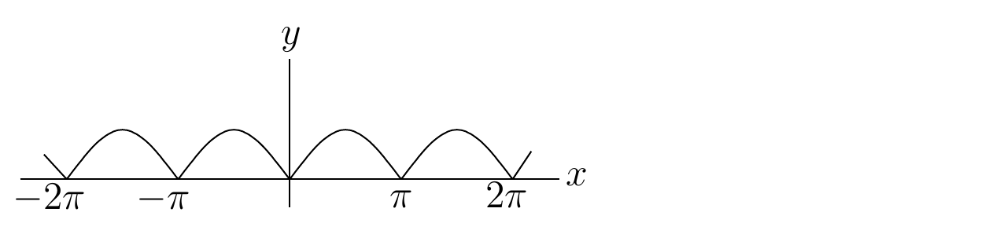

Batas sumber. Bagian ini mengikat
funct_anal.tex baris 624-1008 pada sumber beku.
Deret Fourier
Klasik untuk Fungsi Bernilai Real
Untuk
,
kita meninjau ruang
,
dengan
ukuran Lebesgue pada interval
.
Suatu himpunan ortogonal lengkap untuk ruang ini diberikan oleh
fungsi-fungsi trigonometrik
Lebih tepatnya, kita mempunyai
Dari (4.2.5),
kita memperoleh ekspansi Fourier klasik suatu fungsi
,
dengan jumlah-jumlah parsialnya konvergen ke
dalam
,
dan dengan
,
untuk
,
serta
untuk
.
Jika
periodik dengan periode
dan
,
koefisien-koefisien ekspansi Fourier juga diberikan oleh
,
untuk
,
dan
untuk
,
di mana
dapat berupa sembarang bilangan real.
Contoh. Carilah deret Fourier fungsi periodik
dengan periode
yang didefinisikan oleh
Kita mempunyai
Jadi, dengan kesamaan
dipahami dalam
,
Sebagaimana diprediksi oleh Teorema 4.2.3,
nilai deretnya adalah
apabila
dengan
.
Contoh. Carilah deret Fourier fungsi periodik
dengan periode
yang didefinisikan oleh
Kita dapat menggunakan sifat bahwa
jika
merupakan fungsi ganjil, dan
jika
merupakan fungsi genap, untuk memperoleh rumus-rumus yang lebih
sederhana bagi deret Fourier fungsi ganjil dan genap.
Jika
merupakan fungsi genap, ekspansi Fouriernya adalah
(4.3.1)
dengan
dan
untuk
.
Jika
merupakan fungsi ganjil, ekspansi Fouriernya adalah
(4.3.2)
dengan
untuk
.
Deret Fourier sinus suatu fungsi
adalah deret Fourier dari perluasan ganjil formal
berikut. Nilai pada
dan
ditetapkan secara eksplisit agar
pada seluruh interval; perubahan nilai di titik-titik tunggal ini tidak
mengubah kelas
:
jika
;
pembatasan
ke
sama dengan
hampir di mana-mana, yakni sebagai kelas
.
Deret Fourier kosinus suatu fungsi
adalah deret Fourier dari fungsi genap
yang didefinisikan oleh
jika
.
Deret Fourier dalam (4.3.1)
dan (4.3.2)
masing-masing konvergen dalam
ke
,
yakni ke pembatasan hampir di mana-mana dari perluasan
yang bersesuaian, karena setiap deret konvergen ke perluasan tersebut
dalam
.
Contoh. Carilah deret Fourier fungsi periodik
dengan periode
yang didefinisikan oleh
,
yang grafiknya diberikan pada Gambar 4.1 (rujukan ke bab
mendatang).

Grafik fungsi periodik berperiode pi yang
didefinisikan oleh f(x)=|sin(x)|.
Kita perhatikan bahwa
merupakan fungsi genap. Oleh karena itu, semua koefisien
dalam deret Fourier bernilai nol. Dalam rumus untuk
,
kita mempunyai
.
Jadi,
Dalam
,
kita memperoleh
Contoh. Carilah deret Fourier kosinus dari fungsi
untuk
.
Dengan kata lain, kita mencari deret Fourier fungsi genap
berperiode
yang didefinisikan oleh
Karena
merupakan fungsi genap, semua koefisien
dalam deret Fourier bernilai nol. Dalam rumus untuk
,
kita mempunyai
.
Jadi,
Dalam
,
kita memperoleh deret berikut; karena perluasan genap tersebut kontinu
dan terdiferensialkan sepotong-sepotong, kesamaan yang ditampilkan juga
berlaku titik demi titik untuk
:
Kasus Khusus Lainnya
Dengan memperluas definisi suatu fungsi
ke interval yang lebih besar daripada
,
kita dapat memperoleh deret Fourier yang berbeda bagi
pada
dalam bentuk fungsi-fungsi sinus dan kosinus.
Sebagai contoh, jika kita memperluas fungsi
menjadi fungsi genap
sebagai berikut,
maka
,
dan deret Fourier kosinus
pada
yang dibatasi ke
memberikan representasi deret berikut bagi
pada
,
dengan kekonvergenan dalam
:
(4.3.3)
pada
dalam pengertian
,
dengan
untuk
.
Untuk memperoleh rumus ini, kita perlu memperhatikan bahwa
untuk
.
Jadi,
untuk
genap dan
,
sedangkan
untuk
ganjil dan
.
Selanjutnya, kita memperoleh
Jika kita memperluas fungsi
menjadi fungsi ganjil
sebagai berikut,
maka
,
dengan
hampir di mana-mana (yakni sebagai kelas
),
dan deret Fourier sinus
pada
yang dibatasi ke
memberikan representasi deret berikut bagi
pada
,
dengan kekonvergenan dalam
:
(4.3.4)
pada
dalam pengertian
,
dengan
untuk
.
Kita dapat meneruskan seperti di atas untuk memperoleh hasil ini.
Deret Fourier dalam (4.3.3)
dan (4.3.4)
masing-masing konvergen dalam
ke
,
yakni ke pembatasan hampir di mana-mana dari perluasan
yang bersesuaian, karena setiap deret konvergen ke perluasan tersebut
dalam
.
Deret Fourier Fungsi Dua
Variabel
Jika, dalam definisi umum ruang
,
kita mengambil
dan
,
serta
dan
sebagai ukuran Lebesgue pada
,
maka kita memperoleh ruang
yang terdiri atas kelas-kelas ekuivalensi, modulo kesamaan hampir di
mana-mana, dari fungsi-fungsi terukur yang kuadratnya terintegralkan
pada persegi panjang
.
Pembaca dipersilakan menuliskan definisi hasil kali skalar, norma,
himpunan ortogonal, himpunan lengkap, … dalam kasus khusus
.
Kita dapat memperluas konsep deret Fourier klasik secara alami kepada
fungsi-fungsi dalam
.
Sebagai contoh, untuk
,
deret Fourier sinus suatu fungsi
adalah
dengan
untuk
.
Notasi jumlah ganda ini berarti bahwa jumlah parsial persegi panjang
memenuhi
saat
.
Contoh-contoh lain deret Fourier klasik dalam
diserahkan kepada pembaca.
Atribusi dan hak. Karya sumber oleh Benoit Dionne
dilisensikan berdasarkan Creative
Commons Attribution-NonCommercial-ShareAlike 4.0 International.
Terjemahan dan perubahan yang dicatat menggunakan lisensi komponen yang
sama. Produksi terjemahan dan edisi dibantu OpenAI Codex gpt-5.6-sol,
Ultra; semua kredit penulis dan kontributor manusia tetap dipertahankan.
Ini bukan terbitan atau dukungan resmi Benoit Dionne maupun University
of Ottawa.